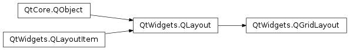

QGridLayout¶
Synopsis¶
Functions¶
- def
addItem(item, row, column[, rowSpan=1[, columnSpan=1[, alignment=Qt.Alignment()]]]) - def
addLayout(arg__1, row, column, rowSpan, columnSpan[, alignment=Qt.Alignment()]) - def
addLayout(arg__1, row, column[, alignment=Qt.Alignment()]) - def
addWidget(arg__1, row, column, rowSpan, columnSpan[, alignment=Qt.Alignment()]) - def
addWidget(arg__1, row, column[, alignment=Qt.Alignment()]) - def
cellRect(row, column) - def
columnCount() - def
columnMinimumWidth(column) - def
columnStretch(column) - def
getItemPosition(idx) - def
horizontalSpacing() - def
itemAtPosition(row, column) - def
originCorner() - def
rowCount() - def
rowMinimumHeight(row) - def
rowStretch(row) - def
setColumnMinimumWidth(column, minSize) - def
setColumnStretch(column, stretch) - def
setDefaultPositioning(n, orient) - def
setHorizontalSpacing(spacing) - def
setOriginCorner(arg__1) - def
setRowMinimumHeight(row, minSize) - def
setRowStretch(row, stretch) - def
setVerticalSpacing(spacing) - def
verticalSpacing()
Detailed Description¶
The
PySide2.QtWidgets.QGridLayoutclass lays out widgets in a grid.
PySide2.QtWidgets.QGridLayouttakes the space made available to it (by its parent layout or by thePySide2.QtWidgets.QLayout.parentWidget()), divides it up into rows and columns, and puts each widget it manages into the correct cell.Columns and rows behave identically; we will discuss columns, but there are equivalent functions for rows.
Each column has a minimum width and a stretch factor. The minimum width is the greatest of that set using
PySide2.QtWidgets.QGridLayout.setColumnMinimumWidth()and the minimum width of each widget in that column. The stretch factor is set usingPySide2.QtWidgets.QGridLayout.setColumnStretch()and determines how much of the available space the column will get over and above its necessary minimum.Normally, each managed widget or layout is put into a cell of its own using
PySide2.QtWidgets.QGridLayout.addWidget(). It is also possible for a widget to occupy multiple cells using the row and column spanning overloads ofPySide2.QtWidgets.QGridLayout.addItem()andPySide2.QtWidgets.QGridLayout.addWidget(). If you do this,PySide2.QtWidgets.QGridLayoutwill guess how to distribute the size over the columns/rows (based on the stretch factors).To remove a widget from a layout, call
PySide2.QtWidgets.QLayout.removeWidget(). CallingQWidget.hide()on a widget also effectively removes the widget from the layout untilQWidget.show()is called.This illustration shows a fragment of a dialog with a five-column, three-row grid (the grid is shown overlaid in magenta):

Columns 0, 2 and 4 in this dialog fragment are made up of a
PySide2.QtWidgets.QLabel, aPySide2.QtWidgets.QLineEdit, and a QListBox. Columns 1 and 3 are placeholders made withPySide2.QtWidgets.QGridLayout.setColumnMinimumWidth(). Row 0 consists of threePySide2.QtWidgets.QLabelobjects, row 1 of threePySide2.QtWidgets.QLineEditobjects and row 2 of three QListBox objects. We used placeholder columns (1 and 3) to get the right amount of space between the columns.Note that the columns and rows are not equally wide or tall. If you want two columns to have the same width, you must set their minimum widths and stretch factors to be the same yourself. You do this using
PySide2.QtWidgets.QGridLayout.setColumnMinimumWidth()andPySide2.QtWidgets.QGridLayout.setColumnStretch().If the
PySide2.QtWidgets.QGridLayoutis not the top-level layout (i.e. does not manage all of the widget’s area and children), you must add it to its parent layout when you create it, but before you do anything with it. The normal way to add a layout is by callingPySide2.QtWidgets.QGridLayout.addLayout()on the parent layout.Once you have added your layout you can start putting widgets and other layouts into the cells of your grid layout using
PySide2.QtWidgets.QGridLayout.addWidget(),PySide2.QtWidgets.QGridLayout.addItem(), andPySide2.QtWidgets.QGridLayout.addLayout().
PySide2.QtWidgets.QGridLayoutalso includes two margin widths: thecontents marginand thePySide2.QtWidgets.QGridLayout.spacing(). The contents margin is the width of the reserved space along each of thePySide2.QtWidgets.QGridLayout‘s four sides. ThePySide2.QtWidgets.QGridLayout.spacing()is the width of the automatically allocated spacing between neighboring boxes.The default contents margin values are provided by the
style. The default value Qt styles specify is 9 for child widgets and 11 for windows. The spacing defaults to the same as the margin width for a top-level layout, or to the same as the parent layout.
-
class
PySide2.QtWidgets.QGridLayout¶ -
class
PySide2.QtWidgets.QGridLayout(parent) Parameters: parent – PySide2.QtWidgets.QWidgetConstructs a new grid layout.
You must insert this grid into another layout. You can insert widgets and layouts into this layout at any time, but laying out will not be performed before this is inserted into another layout.
Constructs a new
PySide2.QtWidgets.QGridLayoutwith parent widget,parent. The layout has one row and one column initially, and will expand when new items are inserted.
-
PySide2.QtWidgets.QGridLayout.addItem(item, row, column[, rowSpan=1[, columnSpan=1[, alignment=Qt.Alignment()]]])¶ Parameters: - item –
PySide2.QtWidgets.QLayoutItem - row –
PySide2.QtCore.int - column –
PySide2.QtCore.int - rowSpan –
PySide2.QtCore.int - columnSpan –
PySide2.QtCore.int - alignment –
PySide2.QtCore.Qt.Alignment
Adds
itemat positionrow,column, spanningrowSpanrows andcolumnSpancolumns, and aligns it according toalignment. IfrowSpanand/orcolumnSpanis -1, then the item will extend to the bottom and/or right edge, respectively. The layout takes ownership of theitem.Warning
Do not use this function to add child layouts or child widget items. Use
PySide2.QtWidgets.QGridLayout.addLayout()orPySide2.QtWidgets.QGridLayout.addWidget()instead.- item –
-
PySide2.QtWidgets.QGridLayout.addLayout(arg__1, row, column, rowSpan, columnSpan[, alignment=Qt.Alignment()])¶ Parameters: - arg__1 –
PySide2.QtWidgets.QLayout - row –
PySide2.QtCore.int - column –
PySide2.QtCore.int - rowSpan –
PySide2.QtCore.int - columnSpan –
PySide2.QtCore.int - alignment –
PySide2.QtCore.Qt.Alignment
This is an overloaded function.
This version adds the layout
layoutto the cell grid, spanning multiple rows/columns. The cell will start atrow,columnspanningrowSpanrows andcolumnSpancolumns.If
rowSpanand/orcolumnSpanis -1, then the layout will extend to the bottom and/or right edge, respectively.- arg__1 –
-
PySide2.QtWidgets.QGridLayout.addLayout(arg__1, row, column[, alignment=Qt.Alignment()]) Parameters: - arg__1 –
PySide2.QtWidgets.QLayout - row –
PySide2.QtCore.int - column –
PySide2.QtCore.int - alignment –
PySide2.QtCore.Qt.Alignment
Places the
layoutat position (row,column) in the grid. The top-left position is (0, 0).The alignment is specified by
alignment. The default alignment is 0, which means that the widget fills the entire cell.A non-zero alignment indicates that the layout should not grow to fill the available space but should be sized according to
PySide2.QtWidgets.QGridLayout.sizeHint().layoutbecomes a child of the grid layout.- arg__1 –
-
PySide2.QtWidgets.QGridLayout.addWidget(arg__1, row, column[, alignment=Qt.Alignment()])¶ Parameters: - arg__1 –
PySide2.QtWidgets.QWidget - row –
PySide2.QtCore.int - column –
PySide2.QtCore.int - alignment –
PySide2.QtCore.Qt.Alignment
Adds the given
widgetto the cell grid atrow,column. The top-left position is (0, 0) by default.The alignment is specified by
alignment. The default alignment is 0, which means that the widget fills the entire cell.- arg__1 –
-
PySide2.QtWidgets.QGridLayout.addWidget(arg__1, row, column, rowSpan, columnSpan[, alignment=Qt.Alignment()]) Parameters: - arg__1 –
PySide2.QtWidgets.QWidget - row –
PySide2.QtCore.int - column –
PySide2.QtCore.int - rowSpan –
PySide2.QtCore.int - columnSpan –
PySide2.QtCore.int - alignment –
PySide2.QtCore.Qt.Alignment
This is an overloaded function.
This version adds the given
widgetto the cell grid, spanning multiple rows/columns. The cell will start atfromRow,fromColumnspanningrowSpanrows andcolumnSpancolumns. Thewidgetwill have the givenalignment.If
rowSpanand/orcolumnSpanis -1, then the widget will extend to the bottom and/or right edge, respectively.- arg__1 –
-
PySide2.QtWidgets.QGridLayout.cellRect(row, column)¶ Parameters: - row –
PySide2.QtCore.int - column –
PySide2.QtCore.int
Return type: Returns the geometry of the cell with row
rowand columncolumnin the grid. Returns an invalid rectangle ifroworcolumnis outside the grid.Warning
in the current version of Qt this function does not return valid results until
PySide2.QtWidgets.QGridLayout.setGeometry()has been called, i.e. after thePySide2.QtWidgets.QLayout.parentWidget()is visible.- row –
-
PySide2.QtWidgets.QGridLayout.columnCount()¶ Return type: PySide2.QtCore.intReturns the number of columns in this grid.
-
PySide2.QtWidgets.QGridLayout.columnMinimumWidth(column)¶ Parameters: column – PySide2.QtCore.intReturn type: PySide2.QtCore.intReturns the column spacing for column
column.
-
PySide2.QtWidgets.QGridLayout.columnStretch(column)¶ Parameters: column – PySide2.QtCore.intReturn type: PySide2.QtCore.intReturns the stretch factor for column
column.
-
PySide2.QtWidgets.QGridLayout.getItemPosition(idx)¶ Parameters: idx – PySide2.QtCore.intReturns the position information of the item with the given
index.The variables passed as
rowandcolumnare updated with the position of the item in the layout, and therowSpanandcolumnSpanvariables are updated with the vertical and horizontal spans of the item.See also
PySide2.QtWidgets.QGridLayout.itemAtPosition()PySide2.QtWidgets.QGridLayout.itemAt()
-
PySide2.QtWidgets.QGridLayout.horizontalSpacing()¶ Return type: PySide2.QtCore.int
-
PySide2.QtWidgets.QGridLayout.itemAtPosition(row, column)¶ Parameters: - row –
PySide2.QtCore.int - column –
PySide2.QtCore.int
Return type: Returns the layout item that occupies cell (
row,column), or 0 if the cell is empty.- row –
-
PySide2.QtWidgets.QGridLayout.originCorner()¶ Return type: PySide2.QtCore.Qt.CornerReturns the corner that’s used for the grid’s origin, i.e. for position (0, 0).
-
PySide2.QtWidgets.QGridLayout.rowCount()¶ Return type: PySide2.QtCore.intReturns the number of rows in this grid.
-
PySide2.QtWidgets.QGridLayout.rowMinimumHeight(row)¶ Parameters: row – PySide2.QtCore.intReturn type: PySide2.QtCore.intReturns the minimum width set for row
row.
-
PySide2.QtWidgets.QGridLayout.rowStretch(row)¶ Parameters: row – PySide2.QtCore.intReturn type: PySide2.QtCore.intReturns the stretch factor for row
row.
-
PySide2.QtWidgets.QGridLayout.setColumnMinimumWidth(column, minSize)¶ Parameters: - column –
PySide2.QtCore.int - minSize –
PySide2.QtCore.int
Sets the minimum width of column
columntominSizepixels.- column –
-
PySide2.QtWidgets.QGridLayout.setColumnStretch(column, stretch)¶ Parameters: - column –
PySide2.QtCore.int - stretch –
PySide2.QtCore.int
Sets the stretch factor of column
columntostretch. The first column is number 0.The stretch factor is relative to the other columns in this grid. Columns with a higher stretch factor take more of the available space.
The default stretch factor is 0. If the stretch factor is 0 and no other column in this table can grow at all, the column may still grow.
An alternative approach is to add spacing using
PySide2.QtWidgets.QGridLayout.addItem()with aPySide2.QtWidgets.QSpacerItem.- column –
-
PySide2.QtWidgets.QGridLayout.setDefaultPositioning(n, orient)¶ Parameters: - n –
PySide2.QtCore.int - orient –
PySide2.QtCore.Qt.Orientation
Sets the positioning mode used by
PySide2.QtWidgets.QGridLayout.addItem(). IforientisQt.Horizontal, this layout is expanded toncolumns, and items will be added columns-first. Otherwise it is expanded tonrows and items will be added rows-first.- n –
-
PySide2.QtWidgets.QGridLayout.setHorizontalSpacing(spacing)¶ Parameters: spacing – PySide2.QtCore.int
-
PySide2.QtWidgets.QGridLayout.setOriginCorner(arg__1)¶ Parameters: arg__1 – PySide2.QtCore.Qt.CornerSets the grid’s origin corner, i.e. position (0, 0), to
corner.
-
PySide2.QtWidgets.QGridLayout.setRowMinimumHeight(row, minSize)¶ Parameters: - row –
PySide2.QtCore.int - minSize –
PySide2.QtCore.int
Sets the minimum height of row
rowtominSizepixels.- row –
-
PySide2.QtWidgets.QGridLayout.setRowStretch(row, stretch)¶ Parameters: - row –
PySide2.QtCore.int - stretch –
PySide2.QtCore.int
Sets the stretch factor of row
rowtostretch. The first row is number 0.The stretch factor is relative to the other rows in this grid. Rows with a higher stretch factor take more of the available space.
The default stretch factor is 0. If the stretch factor is 0 and no other row in this table can grow at all, the row may still grow.
- row –
-
PySide2.QtWidgets.QGridLayout.setVerticalSpacing(spacing)¶ Parameters: spacing – PySide2.QtCore.int
-
PySide2.QtWidgets.QGridLayout.verticalSpacing()¶ Return type: PySide2.QtCore.int
© 2018 The Qt Company Ltd. Documentation contributions included herein are the copyrights of their respective owners. The documentation provided herein is licensed under the terms of the GNU Free Documentation License version 1.3 as published by the Free Software Foundation. Qt and respective logos are trademarks of The Qt Company Ltd. in Finland and/or other countries worldwide. All other trademarks are property of their respective owners.